Favoritos
Mis favoritos
Los juegos que más me gustan de la bartop, por sistema y en orden alfabético. Como mucho serán 100; en la máquina salen en la colección de favoritos.
- 47de 100
- 41con ficha
Amstrad CPC · 1
FBA (FinalBurn Alpha) · 20
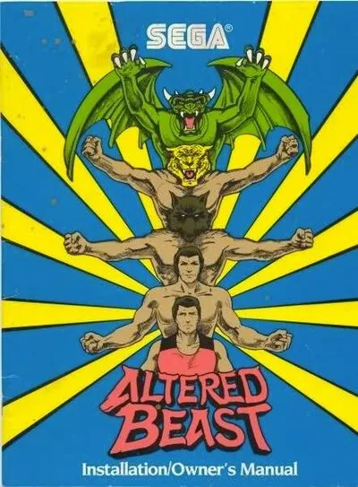
Altered Beast Cadillacs and Dinosaurs
Cadillacs and Dinosaurs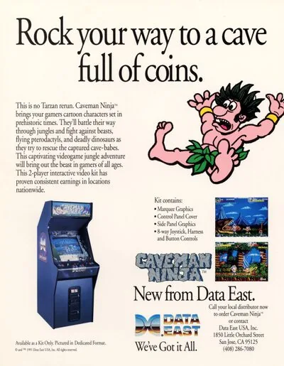
Caveman Ninja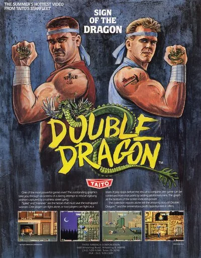
Double Dragon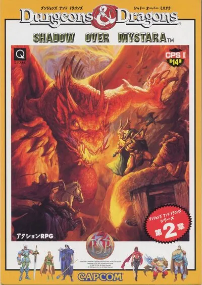
Dungeons & Dragons: Shadow over Mystara Eco Fighters
Eco Fighters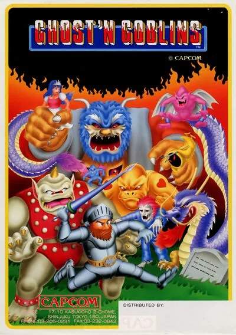
Ghosts'n Goblins Golden Axe
Golden Axe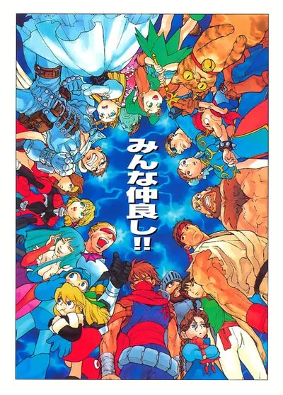
Marvel vs. Capcom: Clash of Super Heroes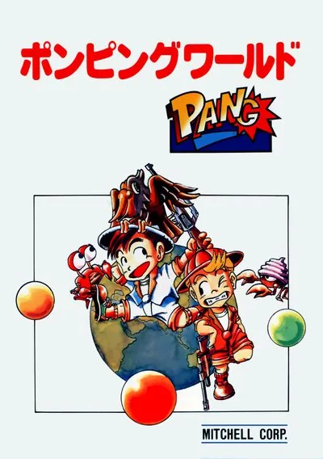
Pang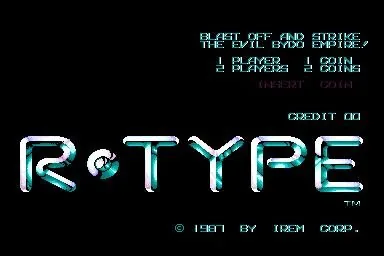
R-Type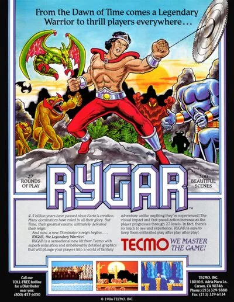
Rygar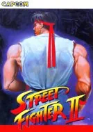
Street Fighter II: The World Warrior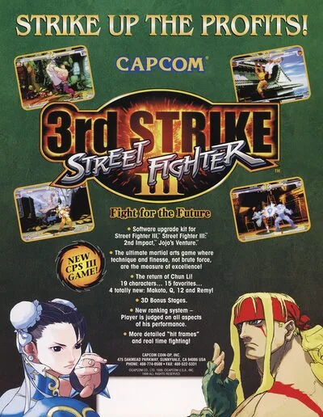
Street Fighter III 3rd Strike: Fight for the Future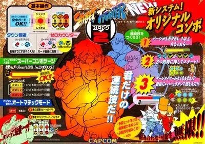
Street Fighter Zero 2 Alpha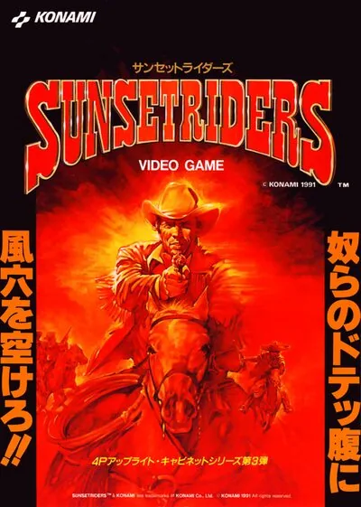
Sunset Riders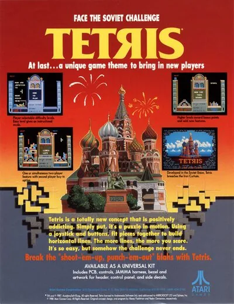
Tetris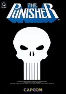
The Punisher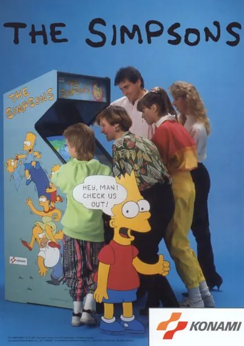
The Simpsons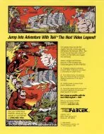
Toki
MAME (lr-mame2003) · 3


Neo Geo · 12
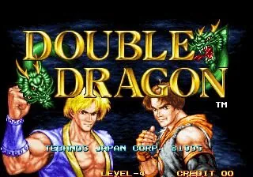
Nº 25Double Dragon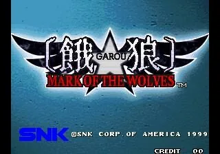
Nº 37Garou - Mark of the Wolves (NGM-2530)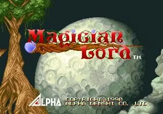
Nº 52Magician Lord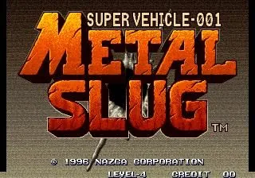
Nº 54Metal Slug - Super Vehicle-001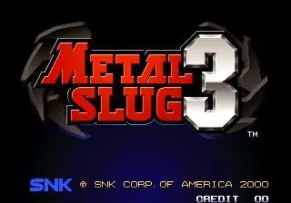
Nº 56Metal Slug 3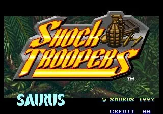
Nº 105Shock Troopers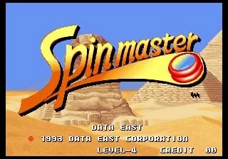
Nº 111Spin Master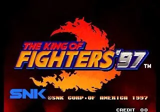
Nº 123The King of Fighters '97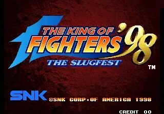
Nº 124The King of Fighters '98 - The Slugfest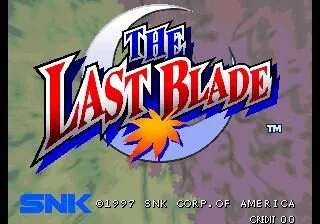
Nº 138The Last Blade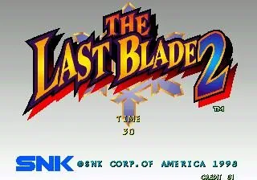
Nº 139The Last Blade 2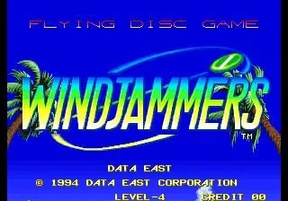
Nº 149Windjammers
Nintendo 64 · 1
PlayStation · 4
Aún sin ficha · 6
Favoritos que todavía no tienen su ficha en la web.
- Captain America and The Avengers FBA (FinalBurn Alpha)
- Knights of Valour FBA (FinalBurn Alpha)
- Marvel vs. Capcom 2: New Age of Heroes Dreamcast
- Ninja Baseball Bat Man FBA (FinalBurn Alpha)
- Splatterhouse (recreativa) FBA (FinalBurn Alpha)
- Vampire Savior: The Lord of Vampire FBA (FinalBurn Alpha)